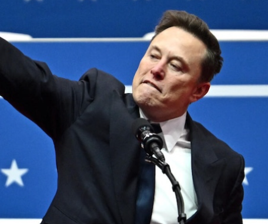

И́лон Рив Маск (англ. Elon Reeve Musk, род. 28 июня 1971, Претория, Гаутенг, ЮАР, Трансвааль, ЮАР) — американский предприниматель, инженер и миллиардер, государственный, политический и общественный деятель. Основатель, генеральный директор и главный инженер компании SpaceX; инвестор, генеральный директор и архитектор продукта компании Tesla; основатель The Boring Company; соучредитель Neuralink и OpenAI; владелец социальной сети X (ранее — «Твиттер»). Богатейший человек в мире: по состоянию на март 2025 года его состояние оценивалось в 307 миллиардов долларов, и до этого, в 2024 году, даже превышало 400 миллиардов. Руководитель департамента эффективности и старший советник президента США в администрации Дональда Трампа (20 января 2025 — 29 мая 2025). Маск родился и вырос в Претории, ЮАР. Некоторое время учился в Преторийском университете, а в 17 лет переехал в Канаду. Поступил в Университет Куинс в Кингстоне и через два года перевёлся в Пенсильванский университет, где получил степень бакалавра по экономике и физике. В 1995 году переехал в Калифорнию, чтобы учиться в Стэнфордском университете, но вместо этого решил заняться бизнесом и вместе со своим братом Кимбалом стал соучредителем компании Zip2, занимавшейся разработкой программного обеспечения для интернета. В 1999 году компания была приобретена Compaq за 307 миллионов долларов. В том же году Маск стал соучредителем онлайн-банка X.com, который в 2000 году конгломеративным путём консолидировался с Confinity и образовал PayPal. В 2002 году компания была куплена eBay за 1,5 миллиарда долларов. В 2002 году Маск основал SpaceX, компанию по производству аэрокосмической техники и оказанию услуг космического транспорта, генеральным директором и главным инженером которой он является. В 2004 году он присоединился к производителю электромобилей Tesla в качестве председателя совета директоров и архитектора проекта, а в 2008 году стал её генеральным директором. В 2006 году он помог создать SolarCity, компанию по предоставлению услуг в области солнечной энергии, которая впоследствии была приобретена Tesla и стала Tesla Energy. В 2015 году он стал соучредителем OpenAI, некоммерческой исследовательской компании, которая занимается продвижением искусственного интеллекта. В 2016 году он стал соучредителем Neuralink, нейротехнологической компании, занимающейся разработкой интерфейсов мозг-компьютер, и основал The Boring Company, компанию по строительству туннелей. Маск предложил идею Hyperloop — высокоскоростную систему транспортировки на вакуумном поезде. В 2022 году стал владельцем Twitter за 44 миллиарда долларов. За выдающиеся заслуги перед наукой 9 мая 2018 года удостоен членства Лондонского королевского общества. В декабре 2021 года журнал Time признал Илона Маска «Человеком года». В 2024 году публично поддержал президентскую кампанию Дональда Трампа и кампанию Республиканской партии США, стал часто выступать вместе с Трампом и поддержал его на победных выборах 2024 года. Он стал главным инвестором кампании Трампа. В 2025 году получил должность Руководитель Департамента эффективности правительства США. В феврале 2025 года Илон Маск выступил с требованием о полномасштабной проверке Форт-Нокса, чтобы определить, находится ли там большая часть золотого запаса США.